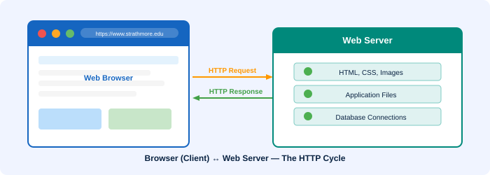

🖥️ Web Browsers
Software applications that locate, retrieve, and display web content

A web browser is a software application used to locate, retrieve, and display content on the World Wide Web, including web pages, images, video, and other files. It acts as the client in the client-server model of the web.
What is a Web Browser?
Computers that read web pages are called web clients. Web clients view pages using a program called a web browser. A web browser runs on your computer and allows you to view web pages stored on web servers anywhere on the Internet.
The browser contacts the web server and requests information using HTTP. The server responds with the requested resource, and the browser renders it for display.
How a Browser Fetches Pages
- A browser fetches a web page from a server by making a request.
- A request is a standard HTTP request containing a page address (URL).
- Example:
http://www.strathmore.edu/index.html - The server processes the request and sends back the HTML document and resources.
How a Browser Displays Pages
- All web pages contain instructions for display (HTML tags).
- The browser reads these instructions and renders the page visually.
- HTML tags look like:
<p>This is a Paragraph</p> - Modern browsers also process CSS (styling) and JavaScript (interactivity).
Popular Web Browsers
Common Browsers (2026)
- 🔵 Google Chrome — the most widely used browser worldwide
- 🦊 Mozilla Firefox — open-source, privacy-focused
- 🔷 Microsoft Edge — built into Windows, Chromium-based
- 🦁 Brave — privacy-first, blocks ads by default
- 🅾️ Opera — feature-rich, built-in VPN
- 📱 UC Browser — popular on mobile, especially in Africa & Asia
Browser in the Client-Server Model
In the web's client-server model:
- The browser = the client, running on the user's machine.
- The web server = the server, storing and serving web resources.
- They communicate using the HTTP protocol.
💡 Key Fact: The first graphical web browser, Mosaic, was released in 1993. It transformed the Internet from a text-only system used mainly by academics into a visual, public medium. Today, browsers are among the most-used software applications in the world.